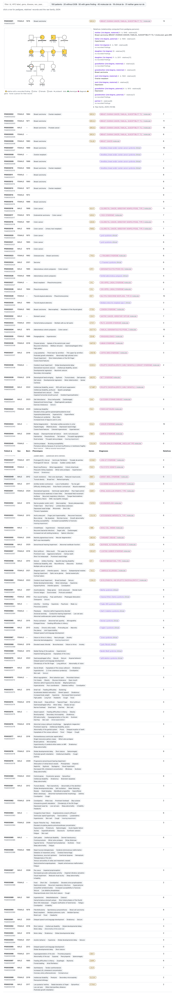
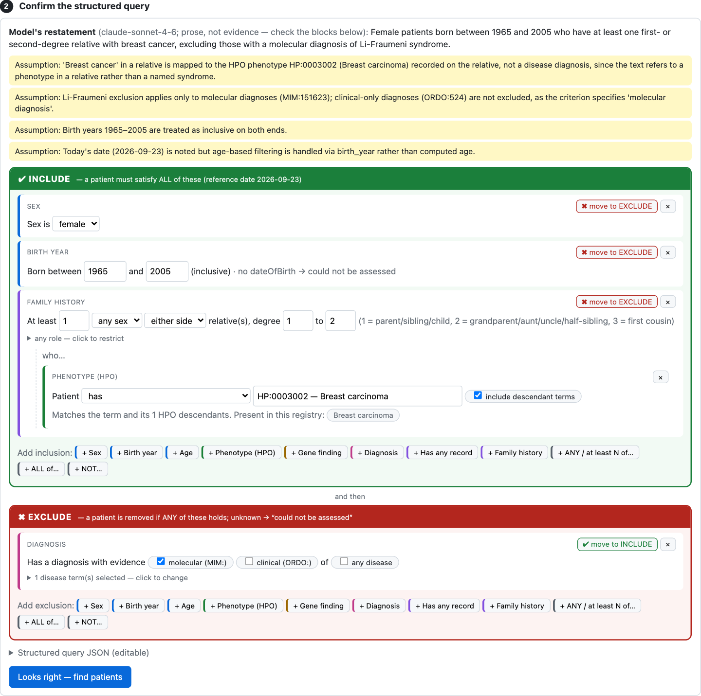
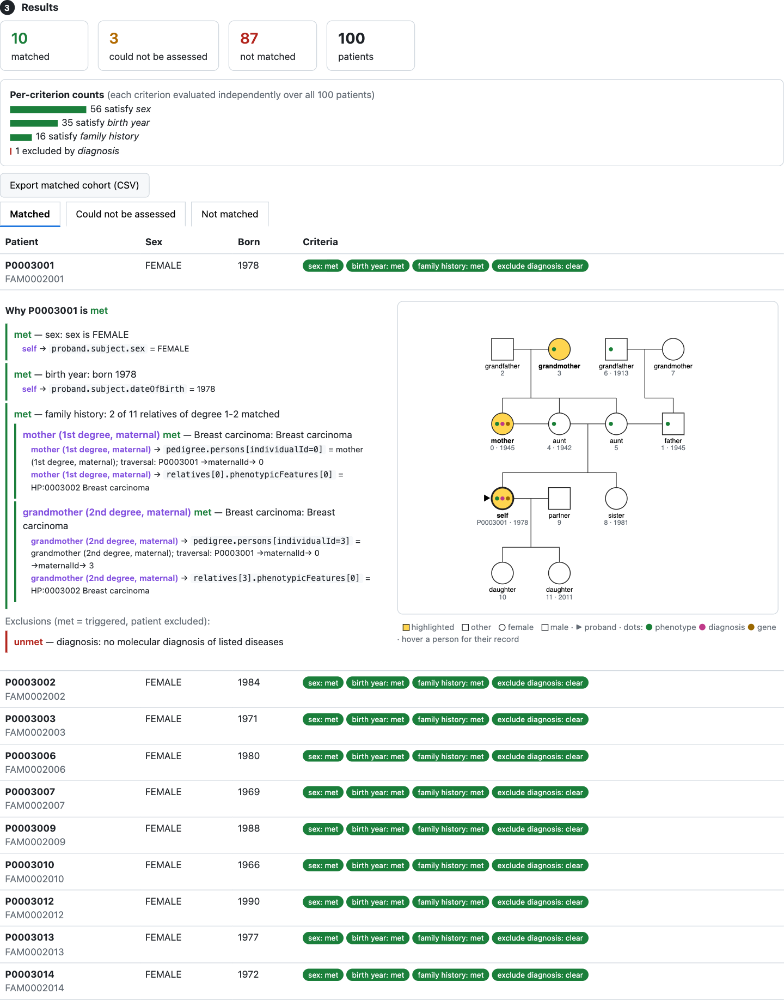
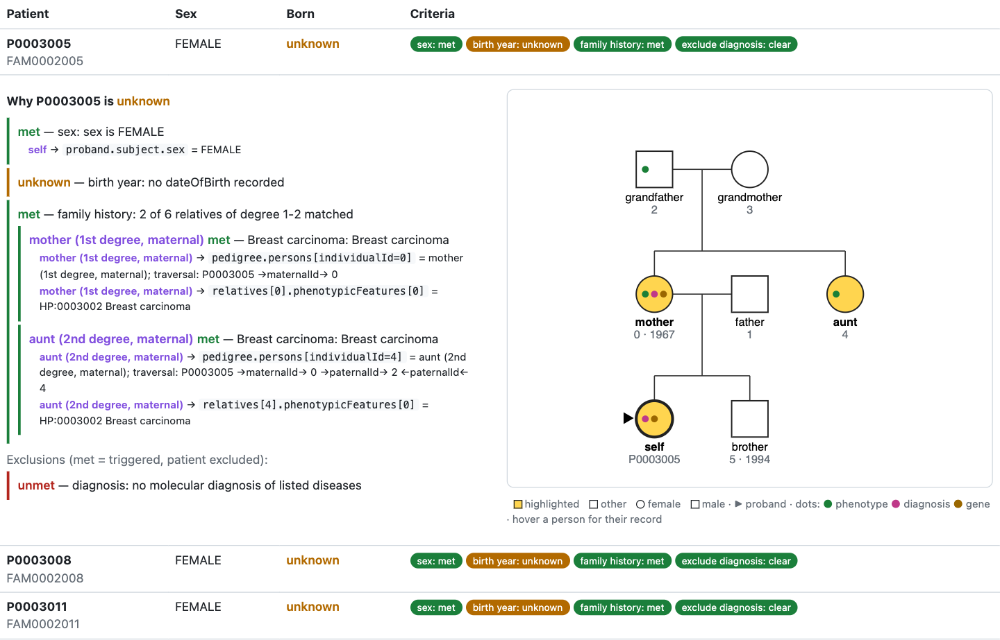

Challenge 8 — Find patients matching trial criteria
Which patients qualify, and why?
Team: Jakob & Max
The PI asks: "how many of our 100 registry families would qualify?" The criteria arrive as prose:
"female, born 1965–2005, with a first- or second-degree relative with breast cancer; exclude Li-Fraumeni"
MIM: molecular diagnosis, an ORDO: clinical diagnosis. Trials accept some, not others.
pedigree.persons parent links: coefficient of relationship → 1st (parent, sibling, child), 2nd (grandparent, aunt, half-sibling), 3rd (first cousin); partners never count.relatives[3].phenotypicFeatures[0], plus the pedigree traversal.

→maternalId→ 0, grandmother via →maternalId→ 0 →maternalId→ 3, both highlighted in the pedigree.
HP:0010582 "Colonic polyposis" is actually Irregular epiphyses; Haiku's HP:0004395 "Colonic polyps" is Malnutrition. Caught by ontology grounding — the label now wins; unresolvable terms are shown with candidates instead of silently used.